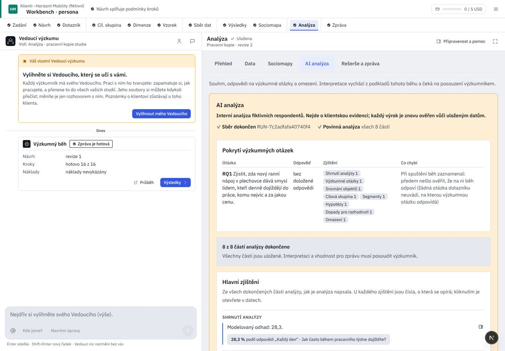

Klienti / Pivovar Zlatá Hora
Vnímání značek ležáků 2026
Hledat nebo spustit…⌘K
Vše
Čeká na vás
Posoudit návrh dotazníku Vnímání značek ležáků 2026 · DotazníkDoplnit rozhodnutí do Zadání Vnímání značek ležáků 2026 · ZadáníZnalosti ke schválení Pivovar Zlatá HoraPravidla Deep Research ke schválení Nastavení · Deep ResearchPřejít
Klienti GKPivovar Zlatá Hora klientVnímání značek ležáků 2026 přehled studie · 2 čekají na vásZnalosti klienta Pivovar Zlatá HoraNastavení GNAkce
Použít jako základ nového výzkumu design této studieNový výzkum u klienta Pivovar Zlatá HoraNPřidat podklady soubory, tabulky, textUAnalyzuj zadání úloha Vedoucího≤ 0,40 USDSpustit výzkum Sběr dat · Kontrola a spuštěníStáhnout zprávu DOCX nebo PDF↑↓ vybratEnter otevřítEsc zavřít? všechny zkratky
0 běží2 čekají
Analýzakrok 10 z 11Čeká na vásNa tomto kroku nic nečekáa 2 na jiném krokuZ výsledků běhu 1 · 22 měření
Prototyp · ukázkaHypotézy
Hypotézy čekají na rozpočet: potřebují nejvýše 0,90 USD, ve studii zbývá 0,00 USD. Sedm hotových částí zůstává. Jedno navýšení pustí všechny kroky běhu, které na rozpočet čekají.
Nový rozpočet studie{{liftLabel}}
AI znovu píše Hypotézy. Ostatních sedm částí zůstává, jak jsou.
Hypotézy potřebují opravu. Text cituje číslo, které analýza nepřipustila: „62 % žen 18–24 preferuje 12°“ (efektivní n 21, málo dat). Zbylých 7 částí je hotových.
Hypotézy jsou znovu napsané (0,41 USD). Všech 8 částí je hotových.
Odpovědi na výzkumné otázky
| Otázka | Odpověď | Stav |
|---|---|---|
| {{c.id}} {{c.q}} | {{c.a}}{{c.from}} | {{c.state}} |
Zjištění
Do zprávy jde jen to, co přijmete. Vyřazené zjištění zůstane tady, přeškrtnuté.
{{f.mod}}
{{f.head}} {{f.body}}
{{f.word}}Externí kontext
rešerše k návrhu, ne data respondentů
Prodej ležáků v ČR 2025 meziročně −2 %, nealko +9 %.Český svaz pivovarů a sladoven · cs.wikipedia.org
UX kritika · Analýza
Analýza převádí čísla do vět. Dnes žádá posouzení výzkumníkem, ale nedá ho nikam zapsat, oprava blokované části je na jiném kroku a zjištění se ukazují dvakrát. Kód d5d36b25; R/ = apps/web/src/components/rehome/research/.
Dnes v AIA (workbench, 1440 px)

{{c.l}}{{c.t}}
- {{x.t}}{{x.a}}